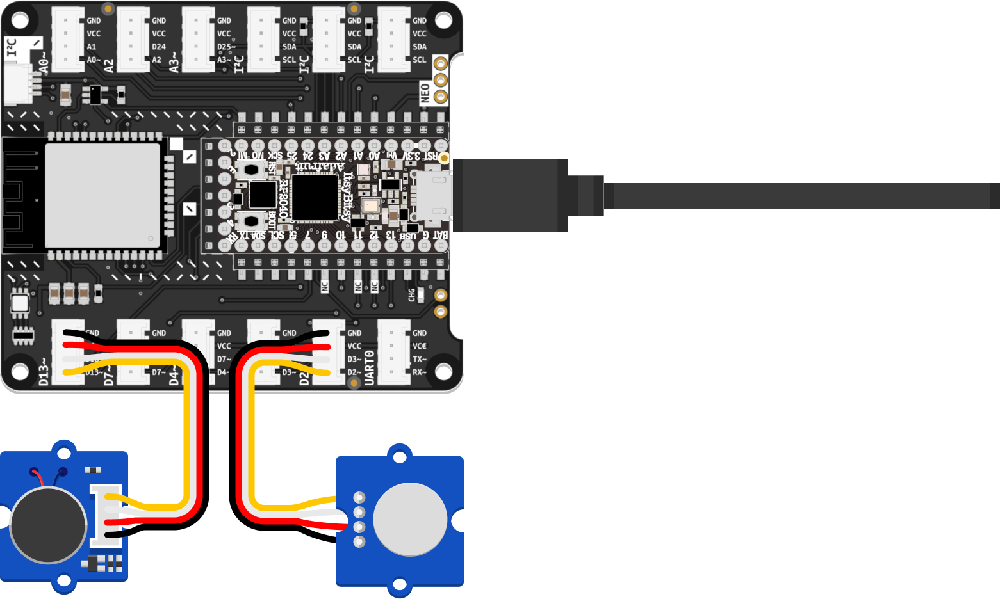

Now that your prototype can register a user input, it is time to tie it together by adding your output component.

D13, as shown in the illustration.motor. This time, instead of reading a value from a sensor, you will use the variable to write data to an actuator. The statements needed for the vibration motor will look very similar to the ones you wrote for the touch sensor, with one critical difference: As shown in the following example, the digitalio.Direction is set to OUTPUT.if...else statements (conditional statements). An if statement executes a block of code only if a specified condition is True. An else clause can be added to run another set of instructions should the condition be false.sensor.value is True:, the motor can be turned on with motor.value = True. Else, the motor needs to be turned off again. Remember to save your code to see it in action.import board
import digitalio
import time
sensor = digitalio.DigitalInOut(board.D2)
sensor.direction = digitalio.Direction.INPUT
motor = digitalio.DigitalInOut(board.D13)
motor.direction = digitalio.Direction.OUTPUT
while True:
print(sensor.value)
if sensor.value is True:
motor.value = True
else:
motor.value = False
time.sleep(0.1)
It is advisable to regularly back up the code stored on the CIRCUITPY drive to your computer. That way, you have something to fall back on should a memory loss occur or your ItsyBitsy is misplaced.